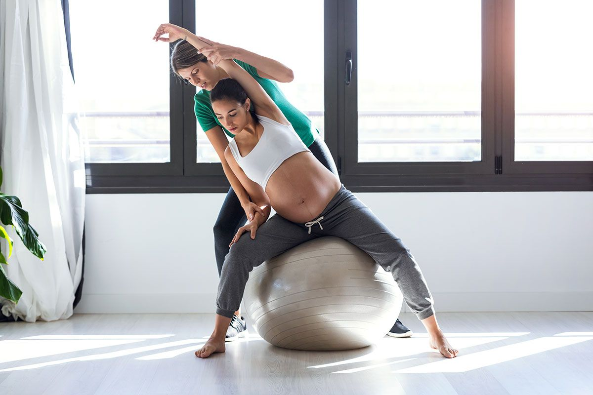

Prática de exercícios físicos na gravidez
De acordo com o Guia, as mulheres durante a gravidez e no pós-parto podem praticar atividade física no seu tempo livre fazendo aquilo que gosta. Então vale caminhar, correr, dançar, nadar, pedalar, fazer ginástica, musculação, hidroginástica ou alongamentos, entre outras. Auxiliando AVDS Atividades da vida diaria.
Segundos estudos as atividades se tornaram mais facéis de serem executadas.
A gravidez é dividida em três trimestres, em função das especificidades destes períodos:
- No primeiro, começa a divisão celular, que transforma o óvulo fecundado em um embrião
- No segundo, todo o sistema do bebê é concluído.
- No terceiro, o bebê ganha peso e altura, enquanto o corpo da mãe se prepara para o parto.

Exercícios
Conhecendo os seus efeitos : Exemplos
- Controle da ansiedade.
- Controle do fluxo sanguíneo cerebral.
- Redução da retenção de líquido.
- Auxilia no controle do ganho de peso, mantendo mãe e bebê saudáveis.
- Redução de dores na lombar.
- Manutenção do condicionamento cardiovascular.
PESQUISA CIENTÍFICA
Banco de artigos:
SciELO – Scientific Electronic Library Online : uma biblioteca virtual de revistas científicas brasileiras em formato eletrônico. Ela organiza e publica textos completos de revistas na Internet / Web, assim como produz e publica indicadores do seu uso e impacto.
LINK GUIA : https://wp.scielo.org/wp-content/uploads/PACKER-A.L.-et-al.-SciELO-uma-metodologia.pdf
td{
text-align: center;/*left,right,justify*/
vertical-align: middle;/*top,bottom*/
padding: 20px;
}
table, td{
border: 1px solid;
border-collapse : collapse; /* Só fica uma borda*/
width: 600px;
height: 50px;
}
tr:nth-child(even) {background-color: rgb(225, 23, 211);}
tr:hover {background-color:pink;} /*Linha*/
td:hover {background-color: rgb(240, 255, 252);} /* Célula*/
img{width: 100%;
height: 200px;
}
th{
background-color: rgb(58, 246, 37);
color: rgb(58, 130, 193);
padding: 4%;
color: red;
border-right: 4px rgb(64, 161, 106);
}